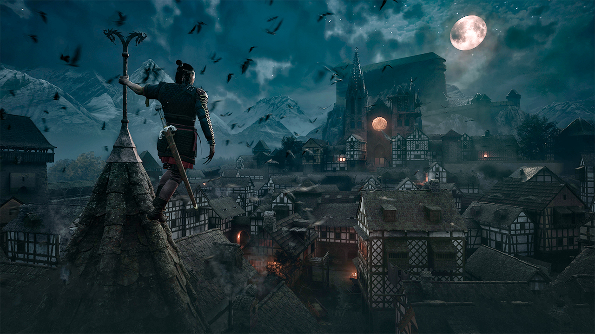

Le premier jeu des anciens devs de CD Projekt.
Le jeu est exceptionnel, j'ai adoré du début à la fin (ou presque).
Dans ce RPG en monde ouvert, on joue un jeune paysan qui devient un "vampire" par la contrainte.
Il doit sauver sa famille et libérer la région de l'oppression des vampires.
On a exactement 30 jours et 30 nuits pour y parvenir.
Car oui, l'une des subtilités assez originales du jeu est que pour certaines actions, choix ou autres que vous faites
vous dépensez un segment de temps. Donc il faudra faire des choix judicieux pour ne pas dépasser les 30 jours !
Je trouve le système de combat très réussi, les parades parfaites directionnelles sont jouissives.
On a un beau panel de pouvoirs à débloquer, du stuff, des armes, etc.
On pourra aussi looter toute la map comme un bon gros gourmand. Et le loot, J'ADORE !
Le perso est assez stylé, on prend plaisir à le jouer.
Le bestiaire est assez varié, même si j'aurais aimé un peu plus de diversité.
Les boss sont très sympas, les différents PNJ importants sont cools (surtout Anca la GOAT).
Bref, ça fait longtemps que je n'avais pas joué à un aussi bon RPG en monde ouvert.
Je ne peux que le recommander à 1000 %.
Et puis cette scène post-crédit ! WWWWOOWWWWW !
Hâte de suivre les futurs jeux du studio Rebel Wolves et de jouer à la suite de l'histoire de Coen !